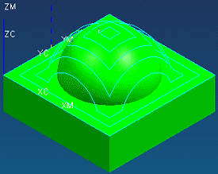

查看一个现有的刀轨
-
在工序导航器的程序顺序视图中，展开对象以便您可以看见工序。
要进行后处理，工序必须包含一个一个已生成的刀轨，重新后处理状态 (
 标志)表示刀轨已经生成但尚未后处理或从部件文件中导出。
标志)表示刀轨已经生成但尚未后处理或从部件文件中导出。 -
在工序导航器中，点击 FIXED_CONTOUR 以查看刀轨。

这个刀轨存在于部件内部，由于它是以标准仿 APT 语言编写，因此机床无法直接读取使用。
-
右击 FIXED_CONTOUR 并选择刀轨→列表。
后处理将把这种包含事件以及动作的内部刀轨转换为机床控制器相兼容的格式，例如，FEDRAT/MMPM,250.0000命令就会被转换为 F250.0，GOTO/0.0000.45,0000,3.0000会被转换为 G00X0.0000Y45.0000Z3.0000。
-
关闭信息窗口。